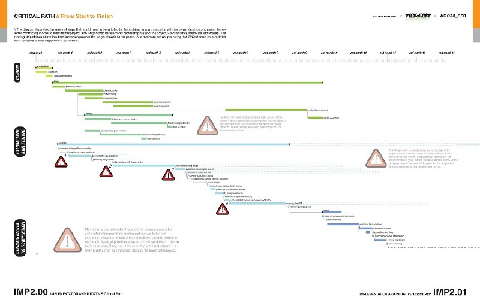
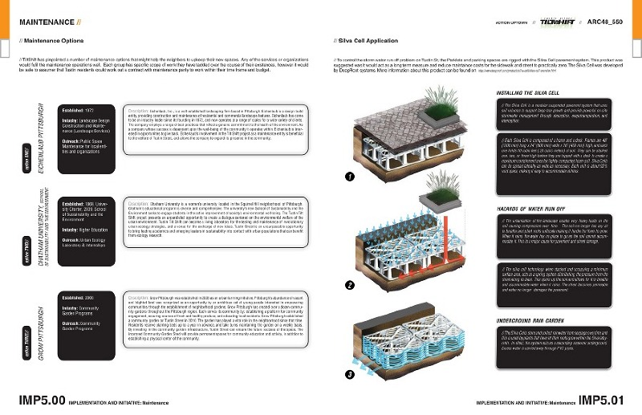
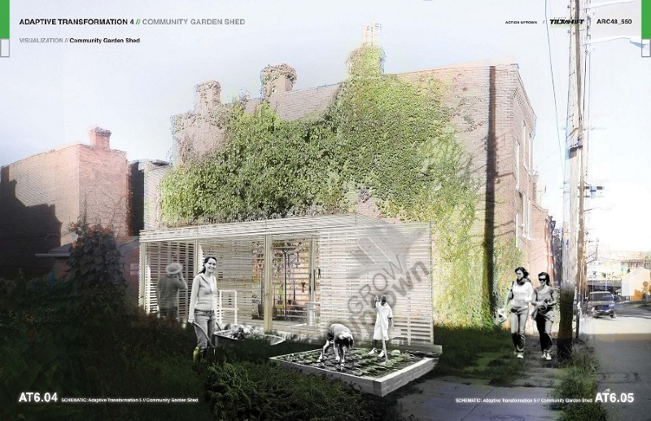
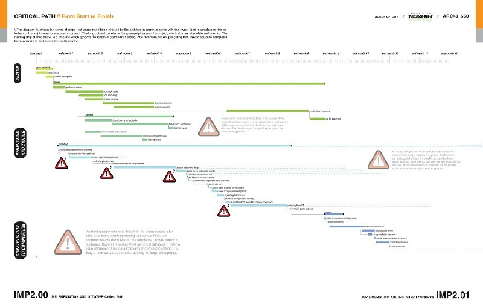
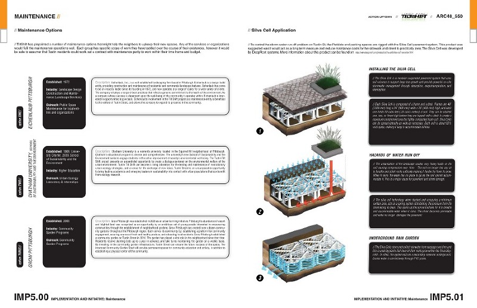
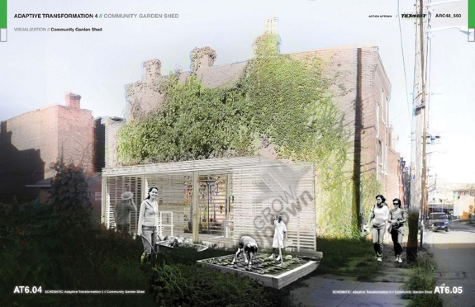

Tiltshift
A redevelopment proposal for the 2000 block of Tustin Street in the Uptown neighborhood of Pittsburgh, Pennsylvania.
Coursework for Issues of Practice: Instructor John Folan.
The project was completed in collaboration with Matt Adler, Alex Fischer, Rohan Rathod, and Kyle Woltersdorf. Tiltshift is a comprehensive design document that catalogs existing site conditions & development factors and proposes a range of urban design interventions.
Tiltshift is a prototypical development scheme for neglected areas of Uptown. The project proposes four urban strategies that holistically address social, urban, and architectural deficiencies on site.
A reinvigorated urban park provides an elevated viewing platform to allow residents access to iconic views of Pittsburgh's South Side.
Street-side "parklets" extend the public domain from porch to street, intensifying opportunities for serendipitous interaction.
A large green wall reinforces a crumbling party wall, and generates a new image for Tustin Street.
A community garden center provides a permanent home for an already thriving urban agriculture program.
This project was completed with the support of Action Housing, Pittsburgh, PA.